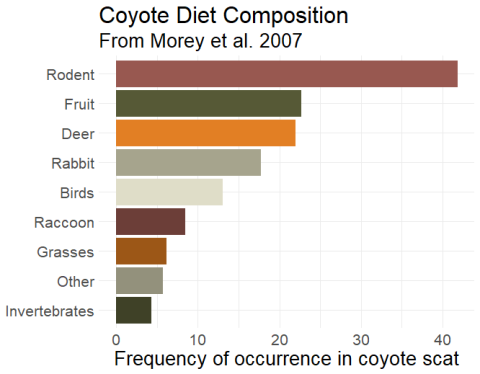
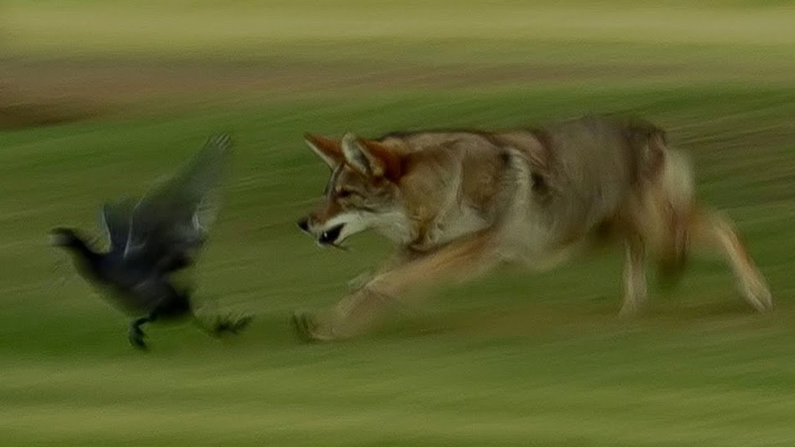
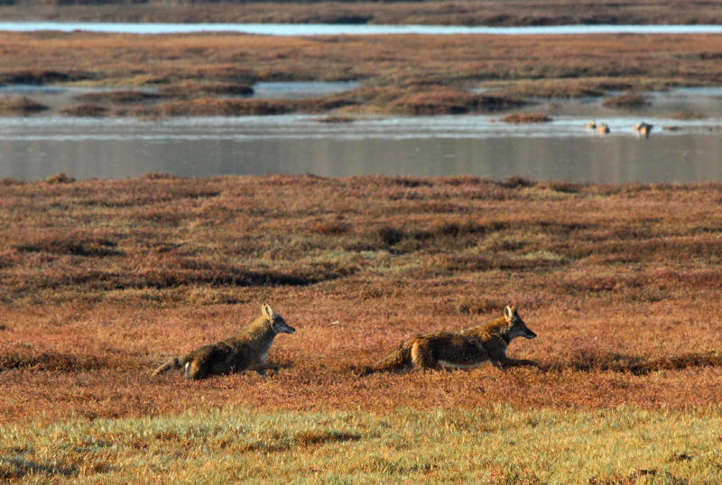
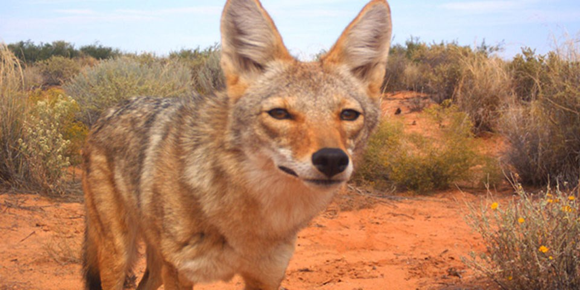

Diet
 Coyotes are opportunistic omnivores, meaning they eat a wide variety of foods depending on what is available in their environment. Their diet can vary based on the season, geographical location, and local prey availability. In Northern California, the diet of coyotes may include:
1. Small Mammals: Coyotes commonly hunt small mammals such as rabbits, rodents (like squirrels and mice), and sometimes small ungulates like fawns.
2. Birds: They may consume birds, especially ground-nesting birds and their eggs.
3. Insects: Insects can be a significant part of a coyote's diet, especially during certain times of the year.
4. Fruits and Vegetables: Coyotes are known to consume fruits, berries, and vegetables. They might eat agricultural crops if they are available.
5. Carrion: Coyotes are scavengers and will feed on carrion (the flesh of dead animals) when the opportunity arises.
6. Fish: In some areas, coyotes may include fish in their diet, particularly if they live near water bodies.
7. Human Food: In urban or suburban areas, coyotes might scavenge for human food in garbage bins, compost piles, or other accessible sources.
The specific composition of a coyote's diet in Northern California can be influenced by factors such as the presence of urban areas, agricultural activities, and the local ecosystem. It's important to note that coyotes are adaptable and can adjust their diet based on what is available to them in their environment.
Habitat
 Coyotes are highly adaptable animals and can be found in a variety of habitats, including those in Northern California. The specific habitat of coyotes in this region can vary, but generally, they are known to inhabit the following types of environments:
1. Grasslands: Coyotes are often found in grassy areas, where they can hunt small mammals like rodents and rabbits.
2. Woodlands: They can thrive in wooded areas, including forests and woodlands, where they find cover and potential prey.
3. Chaparral: Coyotes may inhabit chaparral ecosystems, characterized by dense, woody shrubs.
4. Urban and Suburban Areas: Coyotes have adapted well to human-modified environments and can be found in urban and suburban areas, particularly where there are parks, green spaces, and sufficient food sources.
5. Farmland: Agricultural areas can attract coyotes due to the presence of small mammals, insects, and sometimes livestock.
6. Riparian Areas: Coyotes may be found along rivers, streams, and other water sources, where they can find water and prey.
7. Desert Edges: In some cases, coyotes may extend their range into arid regions, such as the edges of deserts.
Coyotes are versatile and can adjust their habitat preferences based on food availability, water sources, and shelter. They are known for their ability to coexist with humans, and this adaptability has contributed to their widespread distribution across North America, including Northern California.
Bio

Fun Facts about coyotes:
1. Clever Problem-Solvers: Coyotes are known for their intelligence and problem-solving skills. They can adapt to various situations and environments, often finding creative solutions to challenges they encounter.
2. Eco-friendly Pest Control: Coyotes play a valuable role in natural pest control. They help keep rodent populations in check by preying on mice and rats, making them beneficial for agriculture and human settlements.
3. Fast Eaters: Coyotes are efficient eaters. They have been observed consuming large quantities of food quickly, which is an adaptation that allows them to eat fast and move on, reducing the risk of being scavenged by larger predators.
4. Diverse Coat Colors: Coyotes exhibit a range of coat colors, including shades of gray, brown, red, and even black. This diversity in coat coloration can be influenced by geographic location and genetic factors, resulting in a visually interesting population of coyotes.